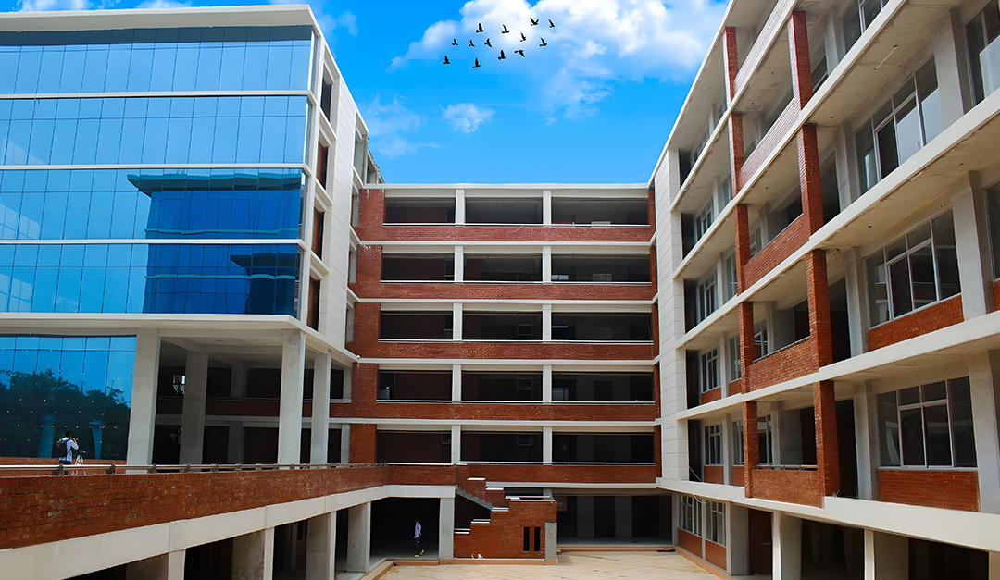

01
Science &
Engineering
Build, design and solve the challenges of tomorrow.
- Computer Science & Engineering
- Electrical & Electronic Engineering
- Textile Engineering
- Mechanical Engineering
- Civil Engineering

Knowledge for Innovation and Change
A place to grow your ideas, build your skills and shape a future with purpose.
A university with purpose
At Northern University Bangladesh, education brings together curiosity, practical learning and the confidence to make a difference.
Get to know NUBFind your field
Build, design and solve the challenges of tomorrow.
Learn to lead with insight, initiative and integrity.
View facultyUnderstand people, ideas and the world we share.
View facultyStudy justice, rights and the institutions that shape society.
View facultyConnect scientific knowledge with better lives and communities.
View facultyMore than a classroom
Useful links, all in one place
The services and resources NUB students use most.
The latest from NUB
Stay close to the conversations, discoveries and moments shaping our community.
NUB announcementsAccreditation & collaboration
Connections with institutions and organizations beyond our campus.
Northern University Bangladesh